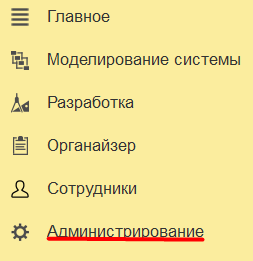
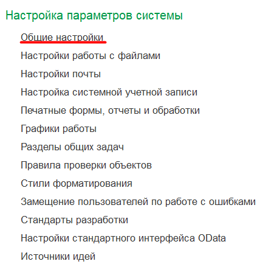
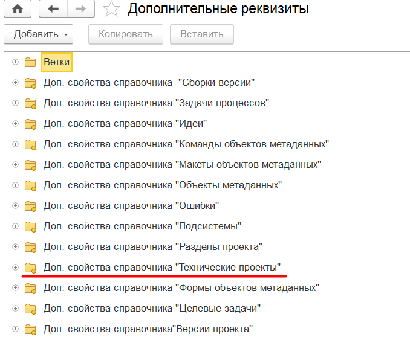
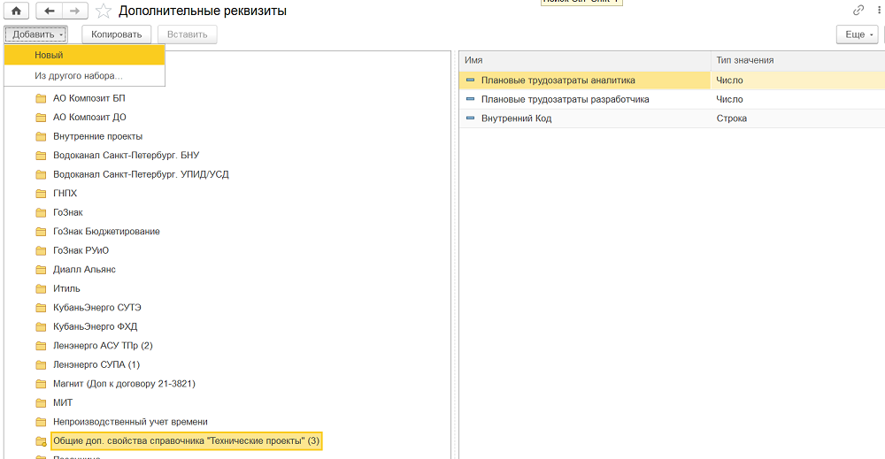
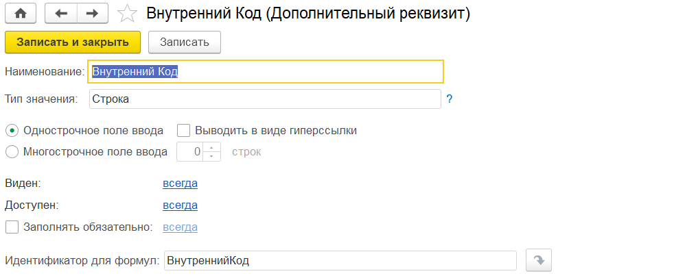
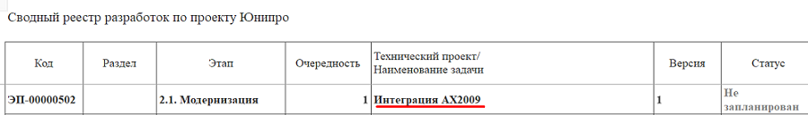
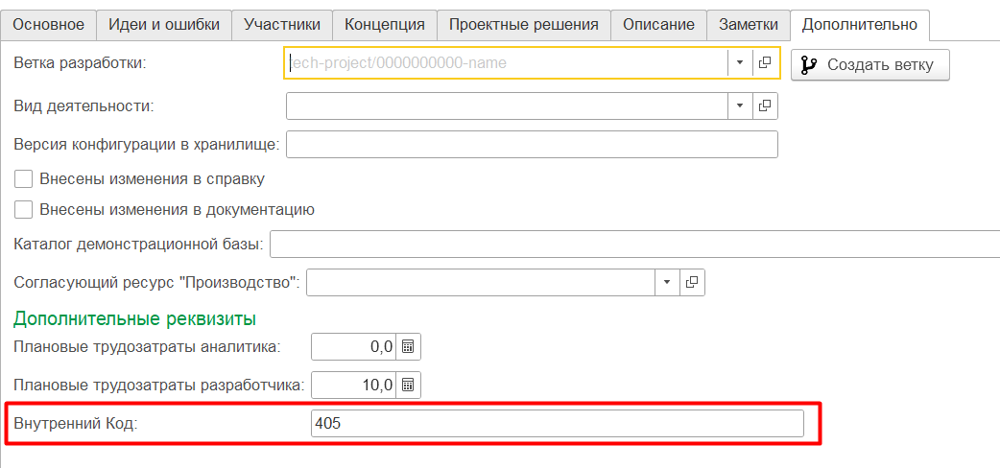

Как добавить дополнительные реквизиты и значения дополнительных реквизитов
Для начала зайдем в вкладку Администрирование.

Далее перейдем в общие настройки.

Найдем в списке Дополнительные реквизиты и сведения, затем перейдем по ссылке к дополнительным реквизитам
Далее перейдем в папку Доп. Свойства справочника "Технические проекты"

Затем перейдем в папку Общие доп. свойства справочника "Технические проекты". Нажмем кнопку добавить.

Далее в форме можем указать имя и тип. Важно нужно указать Идентификатор для формул как ВнутреннийКод.

Вернемся в отчет. У вас есть возможность перейти из отчета к техническому проекту.

В форме технического проекта перейдите во вкладку дополнительно.
Внизу вы можете указать значения для дополнительных реквизитов.
